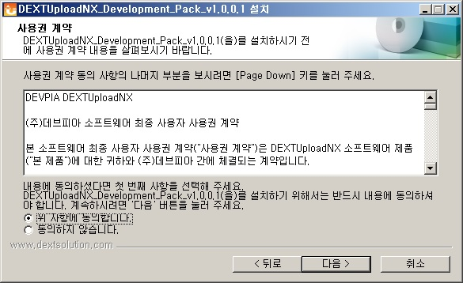

- 1) 설치 시작
- 2) 2EULA 동의
- 
- 3) 설치 구성요소(NX, NX Manual, NX Sample) 선택
- - DEXTUploadNX : DEXTUploadNX 구동시 필수 목록을 설치 합니다.
- - Manual : 개발 시 필요한 DEXTUploadNX 의 기능과 지원 속성/함수 등의 정보를 확인 할 수 있는 안내서를 설치합니다.
- - Sample : 개발 시 도움이 될 수있는 예제를 설치합니다.
- 4) 설치 경로 선택
- 5) 선택된 구성요소를 선택한 설치 경로로 설치, 시작 메뉴 그룹 등록
- 6) 설치 완료
- 1)평가판 개발도구 다운로드
- - 다운로드 시 입력된 email 로 인증키 생성 시 필요한 PID 와 SN 이 전달됩니다.
- 2)평가판 인증키 요청
- - 평가판 다운로드 페이지에서 아래와 같이 DEXTUploadNX 평가판 인증키 요청 링크 클릭

- - 평가판 인증키 생성정보 입력 창 생성 확인 후 정보 입력
- - ProductID 전달받은 PID 입력
- - Serial Number 전달받은 SN 입력
- - Domain 평가판 테스트를 위한 도메인을 입력하세요. 별도 도메인 없이 로컬 테스트의 경우 localhost 를 추천합니다.
- - 상기 3가지 필수 정보 입력, 기본정보를 입력 후 확인 버튼을 클릭하시면 입력된 email 로 30일 동안 사용 가능한 인증키가 발송됩니다.
- 1)MY PAGE 의 설치정보 변경탭 정보중 도메인(IP) 정보 확인
- - 제품구입 후 정품등록을 완료하면 MY Page의 설치정보 변경 탭에서 제품이 사용될 도메인(IP) 를 설정
- - 도메인(IP) 를 설정하지 않는 경우 인증키를 발급할 수 없습니다.
- 2)MY PAGE 의 인증키 생성탭으로 이동하여 인증키 생성
- - 인증키를 생성할 대상 PID 와 SN을 입력하여 인증키를 생성합니다.
- - 생성된 인증키를 복사하여 사용 가능합니다.

- 1)DEXTUploadNX Development Package 설치 위치로 이동
- - 제품이 설치된 위치로 이동합니다. 설치 위치 변경 없이 설치 시 32bit, 64bit 각각 아래의 경로에 위치합니다.
- - 32bit OS: "C:\Program Files\DEVPIA\DEXTUploadNX_Development_Pack"
- - 64bit OS: "C:\Program Files (x86)\DEVPIA\DEXTUploadNX_Development_Pack"
- 2)설치 위치의 DEXTUploadNX 폴더 내부의 DEXTUploadNX.js 파일 수정
- - 메모장 또는 기타 js 파일을 편집 할 수 있는 툴을 이요하여 DEXTUploadNX 폴더 안의 DEXTUploadNX.js 파일을 엽니다.
- - 아래 이미지의 붉게 표시된 부분에 발급된 DEXTUploadNX 인증키 를 입력하고 저장합니다.
- 1)DEXTUploadNX Development Package 설치 위치로 이동하여 DEXTUploadNX 폴더와 내부 구성 목록 확인
- - DEXTUploadNX.js: 인증키, Domain 등 설정과 NX 객체 생성을 위한 함수가 구현되어 있습니다.
- - DEXTUploadNX_Client_Install.html: 클라이언트에서 DEXTUploadNX 객체 생성 시 최초 설치 또는 버전 업데이트에 의한 DEXTUploadNX_Client_Installer.exe 설치 파일을 배포하기 위한 페이지 파일입니다.
- - DEXTUploadNX_Client_Installer.exe: DEXTUploadNX 를 Browser에 표시하기 위하여 클라이언트에 다운로드 되어 설치하는 파일입니다.
- - DEXTUploadNX_Setting.html: 현재 열려있는 설정 안내페이지 파일입니다.
- - NXMessage.xml: DEXTUploadNX 객체에서 사용되는 예외처리/UI 등 문자열 리소스 파일입니다.
- - images: 클라이언트 배포/설정 안내페이지에서 사용되는 이미지 파일이 포함된 폴더입니다.
- ※상기 6개의 폴더/파일은 DEXTUploadNX 배포/구동 시 필수적으로 요구되는 요소들 입니다. 또한, 포함되어있는 폴더의 이름(DEXTUploadNX)을 변경하시지 않기를 권장합니다.
- 2)DEXTUploadNX 경로를 웹서버에 등록
- - NX 배포를 위해서 웹서버에 DEXTUploadNX 제품이 설치된 경로를 등록 하거나 기존에 운영중인 응용프로그램 또는 가상디렉토리를 사용하는 경우 DEXTUploadNX 폴더(하위 폴더/파일 포함) 복사합니다.
- 3)DEXTUploadNX 폴더 내부의 DEXTUploadNX.js 파일 항목 수정
- - 메모장 또는 기타 js 파일을 편집 할 수 있는 툴을 이요하여 DEXTUploadNX 폴더 안의 DEXTUploadNX.js 파일을 엽니다.
- - vDEXTUploadNX_Domain 변수 에 인증키 발급 시 입력한 Domain 또는 IP를 입력합니다.
- - vDEXTUploadNX_Path 변수 에 2)DEXTUploadNX 경로를 웹서버에 등록 항목에서 등록 또는 복사된 응용프로그램(or 가상디렉토리) 경로를 입력합니다.
- 4)DEXTUploadNX Client 배포페이지 접근 확인
- - 3)DEXTUploadNX 폴더 내부의 DEXTUploadNX.js 파일 항목 수정 에서 각각 vDEXTUploadNX_Domain 변수에 www.testnx.net, vDEXTUploadNX_Path 변수에 /a/b/c 를 입력한 경우
- - http://www.testnx.net/a/b/c/DEXTUploadNX/DEXTUploadNX_Client_Install.html URL을 입력하여 DEXTUploadNX Client 배포페이지에 정상적으로 접근이 되는지 확인합니다.
- ※ 인증키 를 발급받지 않은 상태인 경우 평가판 또는 정품 인증키 발행 항목을 참조하여 인증키를 발행후 진행하시길 바랍니다.
- 1)DEXTUploadNX Development Package 설치 경로로 이동.
- 2)DEXTUploadNX_Development_Pack 아래의 DEXTUploadNX 폴더를 복사하여 Sample 폴더에 붙여넣습니다.
- 3)Sample 경로를 웹서버에 등록
- - NX Client 배포를 위해서 웹서버에 Sample 이 설치된 경로를 등록합니다.
- - 예저 설치 경로(기본 설치시): C:\Program Files (x86) or C:\Program Files\DEVPIA\DEXTUploadNX_Development_Pack\Sample
- - 아래의 이미지와 같이 응용프로그램(또는 가상디렉토리)의 이름은 NXSamples 로 지정을 해야합니다.
- - NXSamples 아닌 다른 이름을 사용하는 경우 예제가 정상적으로 동작하지 않으며, 이러한 경우 C:\Program Files (x86) or C:\Program Files\DEVPIA\DEXTUploadNX_Development_Pack\Sample 경로의 NXSamples.js 파일을 수정하여 사용하여야 합니다.
- 4)설치 위치의 DEXTUploadNX 폴더 내부의 DEXTUploadNX.js 파일 수정
- - 메모장 또는 기타 js 파일을 편집 할 수 있는 툴을 이요하여 DEXTUploadNX 폴더 안의 DEXTUploadNX.js 파일을 엽니다.
- - 아래 이미지의 붉게 표시된 부분에 발급된 DEXTUploadNX 인증키 를 입력하고 저장합니다.
- - vDEXTUploadNX_Domain 변수 에 인증키 발급 시 입력한 Domain 또는 IP를 입력합니다.
- - vDEXTUploadNX_Path 변수 에 3)Sample 경로를 웹서버에 등록 에서 등록한 응용프로그램(or 가상디렉토리) 경로를 입력합니다. 수정 없이 기본(NXSamples) 사용 시 /NXSamples/DEXTUploadNX 입력하고 저장합니다.
- 5)DEXTUploadNX 예제 실행
- - 4)DEXTUploadNX_Development_Pack/DEXTUploadNX 폴더 내부의 DEXTUploadNX.js 파일 항목 수정 에서 각각 vDEXTUploadNX_Domain 변수에 localhost, vDEXTUploadNX_Path 변수에 /NXSamples 를 입력한 경우
- - 웹브라우저에 http://localhost/NXSamples/index.html 또는 http://localhost/NXSamples 을 입력, DEXTUploadNX Samples 페이지 정상 접근 확인
- - 예제목록 중 파일 업로드 > 예제 1 선택
- - 최초 실행 시 자동으로 DEXTUploadNX 설치페이지로 이동하여 설치를 진행
- - 이미 설치되어있는 경우 아래의 그림과 같이 정상적으로 생성되는지 확인